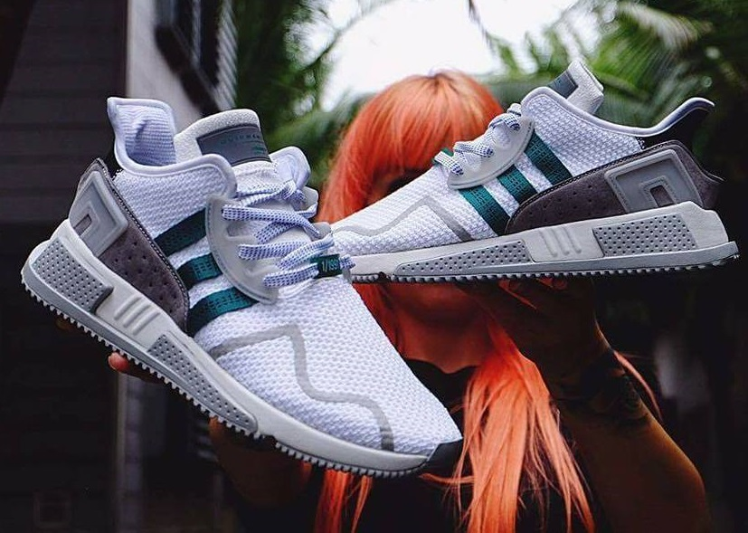
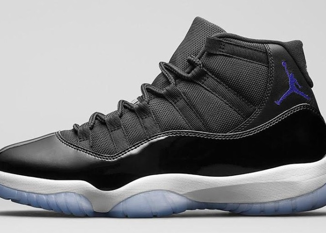
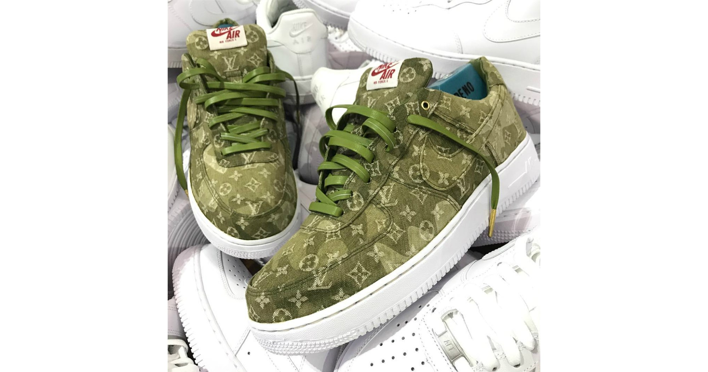
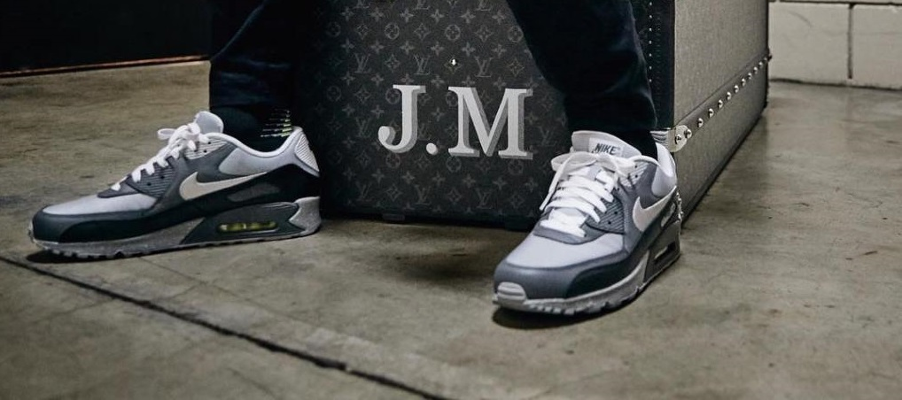
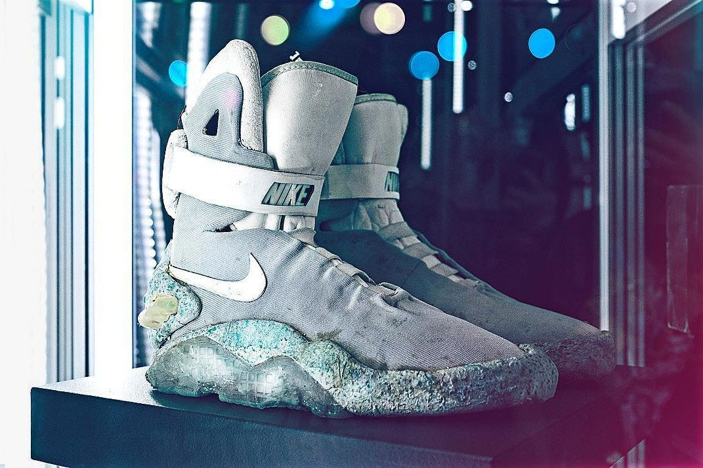

Nike và A$AP Bari sẽ không làm việc cùng nhau trong thời gian tới.


Tin tức
Điều ước thành sự thật với những sản phẩm custom Louis Vuitton từ Super Kreep

Đó chắc chắn là một ước mơ rất xa vời. Nhưng điều gần nhất chúng ta có thể có hiện giờ là những sản phẩm custom đến từ Super Kreep – với chất liệu xịn 100% lấy từ những sản phẩm của Louis Vuitton. Đặc biệt trong số đó là những mẫu giày custom, với quy trình rất phức tạp khi phải tháo bỏ hoàn toàn cấu trúc của đôi giày gốc và sau đó ghép lại với những mảnh chất liệu mới.
Nike Air Max 95 OG “Neon”
Tuy là dịp kỉ niệm 25 năm ra mắt, thế nhưng Air Max 95 vẫn khá mờ nhạt trong khoảng nửa đầu năm nay. Nhưng mọi thứ đang thay đổi theo hướng tốt hơn với phối màu Independence Day tuyệt vời sẽ ra mắt vào ngày quốc khánh Mỹ sắp tới đây. Theo sau đó, phiên bản OG với phối màu Neon cũng đã được Nike cho lên lịch. Phối màu này cũng đã từng ra mắt vào dịp Air Max Day hồi tháng 3 vừa rồi nhưng với chút thay đổi nhỏ. Năm trong “Patch” pack
Làm thế nào để được “collab” cùng Nike? Hãy học hỏi John Mayer!

Nam ca sĩ – nhạc sĩ người Mỹ đã trả lời phỏng vấn của tạp chí GQ cách đây không lâu về việc ra mắt một phiên bản Nike của riêng anh. Dẫu rằng John Mayer không hoàn toàn có một mối quan hệ rõ ràng nào đó với Nike và anh, cũng như Nike, đều không có bất cứ hợp đồng hợp tác nào cả.
John Mayer thường hay xuất hiện trong các số “Người nổi tiếng mang gì?” và anh cũng rất có gu ăn mặc.
Đôi Nike MAG chính gốc từ Marty McFly trong Back to the Future II sắp được mang ra đấu giá

Đôi Nike MAG đầu tiên, ra đời vào năm 1989 và được Marty McFly mang trong bộ phim Back to the Future II, hiện đang thuộc quyền quản lý của Prop Store – chuyên về mua bán, đấu giá các loại vật phẩm (chẳng hạn như costume, các loại đạo cụ,….) liên quan đến phim ảnh. Vào thời gian tới, Prop Store sẽ mang đôi Nike MAG độc nhất 1-of-1 này ra đấu giá.